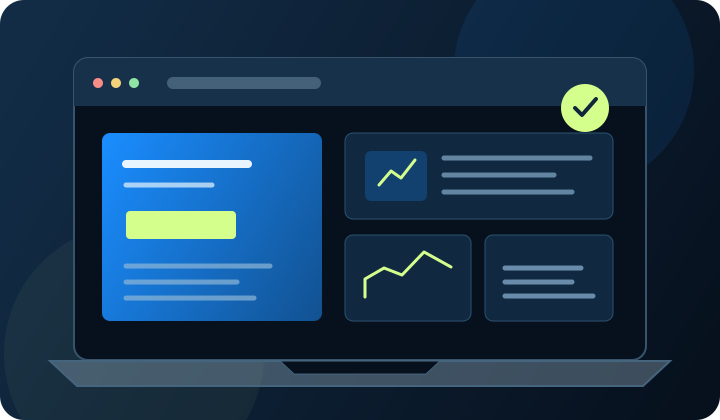

Business and service websites
- Homepage and service pages
- About, portfolio and contact pages
- Clear calls to action
- Responsive layouts
OUR PRIMARY SERVICE
We design and develop responsive business websites around your goals, your customers and the actions that matter. Every project starts with a clear scope, not a one-size-fits-all package.

DESIGNED AROUND YOUR USERS
We plan the content, hierarchy and interactions so visitors can quickly understand your offer and find the next step.
WHAT WE CAN BUILD
Features are confirmed only after reviewing requirements, budget, integrations and technical constraints.
HOW WE WORK
We keep decisions visible and confirm what is included before development begins.
Understand your business, audience, goals and existing online presence.
Confirm pages, features, exclusions, timeline, price and payment terms.
Develop the agreed experience and review it at planned milestones.
Check the agreed pages and functions, then hand over agreed files and access.
BUDGET GUIDANCE
Final pricing depends on page count, functionality, content, integrations and support requirements. Custom scopes are welcome.
WEBSITE DEVELOPMENT FAQS
Clear expectations help projects run smoothly.
Responsive behavior is part of the intended website scope. We plan for narrow screens and check agreed pages for layout, navigation, readable content and usable controls.
Our minimum project budget starts at ₹5,000. A final quote depends on the pages, design needs, functionality, integrations and content requirements.
Timing depends on scope, content readiness, integrations and review cycles. We provide a project schedule after understanding the requirements.
Ownership and handover are defined in the written proposal. Once agreed payment terms are met, we hand over the files and access included in the scope. Third-party licences and subscriptions remain subject to their own terms.
Post-launch updates, hosting, maintenance and support can be discussed and quoted separately. The proposal will state exactly what is included.
Have a website idea?
Start a project conversation